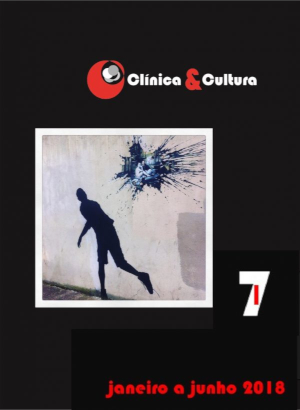

Rony Natale
Psicanalista
Sobre
|
Sou psicólogo de formação acadêmica, estudo e desenvolvo a psicanálise como método de intervenção a partir das abordagens de Freud, Lacan e alguns outros. Faço parte do Grupo de Estudos de Psicanálise de Vitória, onde mantemos constante retorno ao ensino do fundador, Freud, e daquele que consideramos ter feito a psicanálise avançar e lidar com as questões de nosso tempo, Lacan. É por seguir a referência deles que não desconsideramos a necessidade de reinventar a psicanálise a cada nova análise que se inicia. |
Tratamentos
PsicanáliseTrata-se de um método de investigação do inconsciente, cujo instrumento fundamental é a linguagem. O sujeito do inconsciente se funda na linguagem e, em decorrência disso, seu padecimento está referido ao fato de a linguagem, embora o constituir, não o completar. Em caminho diverso do mercado capitalista, que visa oferecer sempre um gadget que complete o sujeito, a psicanálise visa o defrontar com a incontornável incompletude. E, ao avançar em um percurso de análise, é que tal encontro poderá ocorrer. A consequência talvez não seja a oferta de felicidade e bem-estar, mas a lucidez necessária para lidar com as adversidades que nos acometem a todo tempo. Apostamos em um sujeito lúcido, habilitado a viver, trabalhar, amar, sem crer que haja um bem que o abstenha das dificuldades próprias da vida. |

PsicoterapiaA psicoterapia em psicanálise é justamente o processo de análise em que um analisando vai ao encontro do analista para endereçar a ele uma fala, buscando uma solução para seu sofrimento. Ao analista, cabe oferecer uma “não resposta”, caso contrário, entraria no engodo do regime de mercado, que visa solucionar todo e qualquer problema do sujeito. A não resposta convoca o sujeito a avançar cada vez mais na busca de respostas, o que o permite encontrar novas questões e perceber de que se trata quanto ao seu desejo. Para condensar de modo irônico o que seria uma análise, Lacan nos disse “A análise é o que se espera de um analista”, remetendo à necessidade de se questionar o que é um psicanalista, que prática exerce, se está orientado pelo desejo do analista ou se ocupa o lugar de mais um gadget no mercado. Ao fim ao cabo, o analista deve ter passado pelo processo de análise que o levou a se autorizar analista, podendo ocupar o lugar de quem convoca o outro a percorrer o mesmo processo e se deparar com o horizonte da não resposta que é o desejo de cada um. |
Psicanalista Rony Natale
CRP 16/2009
→ Graduado em Psicologia na UFES em 2007;
→ Mestrado em Psicologia Clínica na PUC-RJ em 2018;
→ Doutorado em Psicologia Clínica. Linha de Pesquisa: Psicanálise,
clínica e cultura (em andamento) na PUC-RJ.
artigos
Artigos
Da pulsão anarquista ao trabalho de cultura - a transgressão vital no pensamento de Nathalie Zatzman |
A transgressão como saída psíquica vital |